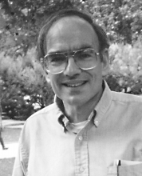

Please note: the AAS Obituaries are temporarily being hosted on this website while their full content is being ingested into the PubPub publishing platform newly adopted by the Bulletin of the American Astronomical Society. When the migration is complete, your existing links will take you to the final, migrated content. Contact peter.williams@aas.org with any questions.
David Joshua Van Blerkom (1942-2001)
David Joshua Van Blerkom, Professor of Astronomy at the University of Massachusetts, died 16 February 2001 after a long struggle with a blood disease. He met with his classes up until three days before he died.
David was born in New York City on 21 August 1942 to Bernard and Molly Van Blerkom. He attended Bronx High School of Science and City College of New York. He did his graduate work at the University of Colorado at Boulder where in 1965 he met Janet Stober, a fellow graduate student and atomic physicist. They were married in March 1965. David’s PhD thesis was on the spectra of planetary nebulae.
Radiative transfer was David’s research specialty. He loved to find explanations for puzzling observations. This led him to work on problems at many wavelengths, beginning with hot stars but gradually moving toward the extended atmospheres of cool giants (SiO masers and radio CO line profiles). Although his favorite environment for problems was these giant stars, both hot and cold, he also worked on solar system problems such as light transmission through the Martian haze and through Saturn’s rings. He was especially fond of Monte Carlo solutions for problems with complex geometries.
David was an excellent, dedicated, and popular teacher. His standards were high but they did not detract from his success in teaching. In 1969 he created a highly popular course “Science for Readers of Science Fiction” which he taught for many years. In addition to this and other undergraduate courses, David taught extensively in the graduate program in such courses as radiative transfer, interstellar matter, and numerical techniques. He also taught courses and workshops for regional secondary school science teachers. For the 1995–1996 academic year, he was awarded the University of Massachusetts Distinguished Teacher Award.
Reading widely, voraciously and with amazing recall, David had extremely diverse interests. He taught a course in Egyptian hieroglyphics in the University of Massachusetts Honors program for many years and was presented a special appreciation award from the Honors program for that and other work. In addition to his interest in Egyptian hieroglyphics, he also taught himself to read cuneiform and Mayan hieroglyphs.
David served as the head of the University of Massachusetts astronomy program for 19(!!!) years, from 1980 to 1999. During that time his patience, fairness, and sense of humor made him respected and loved by students and colleagues. Who else would send out faculty meeting announcements that began with quotations from, for example, Emily Dickinson (“This is the hour of lead….First chill, then stupor, then the letting go.”)?
David was a wonderful friend of more than 30 years. We shared an office as young professors and in later years would relax together at lunch or afternoon tea. I miss his scientific insight, wit, and cheerful conversation.
David is survived by his wife of 36 years, Janet, his three children Daniel, Suzanne, and Derek, a grandson, Aaron Van Blerkom, and his brother Jonathan. In addition to his membership in the AAS, David was also a member of the Royal Astronomical Society and the IAU.
Obituary written by: Tom Arny (University of Massachusetts (Emeritus))
BAAS Citation: BAAS, 2002, 34, 1385
SAO/NASA ADS Bibcode: 2002BAAS...34.1385A